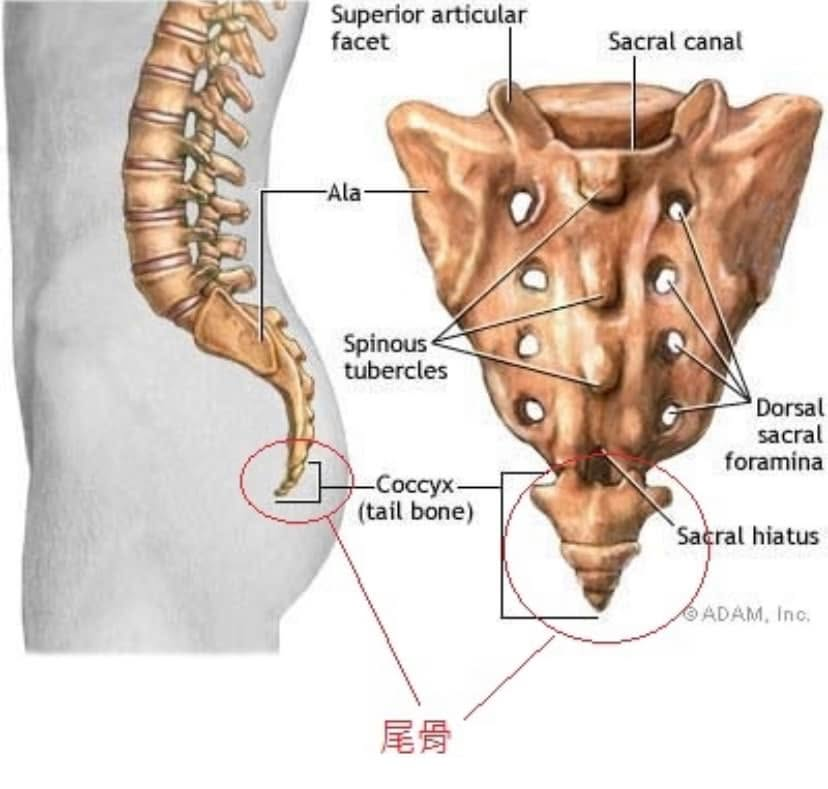
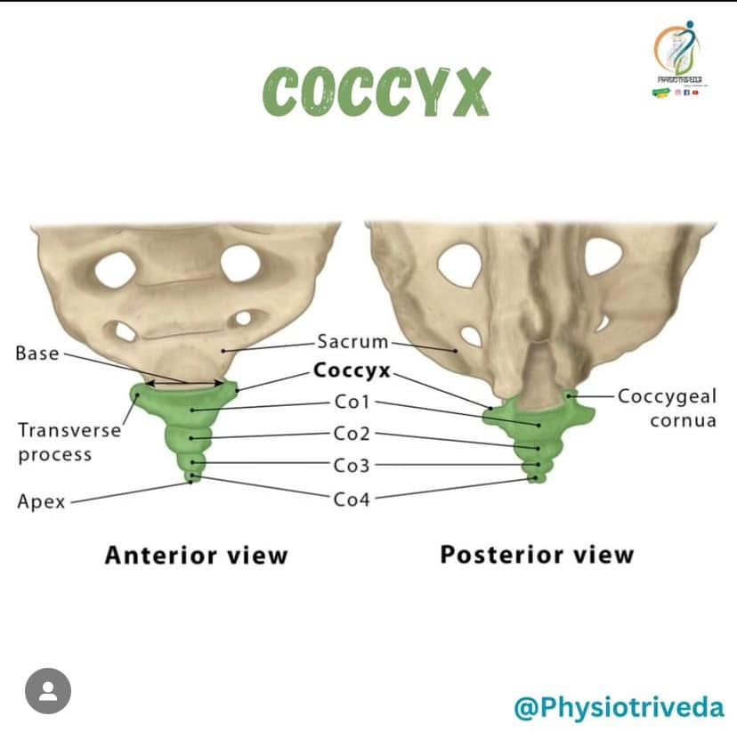

十五歲女孩尾椎痛一年：尾椎偏移的調整紀錄
今早東門早診，一位媽媽帶著15歲剛考完會考的妹妹來，尾椎痛了一年，沒撞到沒跌倒。忙著讀書準備考試，沒時間找醫生看，也越拖越痛。
最近終於考完試了，有時間可以好好處理了。趴著一摸，尾椎左側偏+左後旋，馬上用均抗手法調整，調整後請她起身嘗試原本引發疼痛的姿勢，當下就不痛了，坐站都恢復正常，再約下次好好調骨盆，很開心的走出診間了🥳
——
尾椎是由3-4塊尾骨連結融合而成，近端有纖維軟骨與薦椎相連，而這關節活動範圍女性較男性來的大，尤其是懷孕期間，適應胎兒的長大而有較大的擴張空間。
尾椎的疼痛，除了外傷撞擊造成尾骨骨折的原因外，因其與許多韌帶、肌群都有相連，也常常受到周圍組織張力不平均拉扯或其他病理狀態牽連而造成疼痛。
長時間的尾椎疼痛也容易引發骨盆底肌功能失調，進一步產生其他泌尿系統、內臟筋膜等內科性問題，若有類似問題，一定要趕快專業醫師診斷治療唷！
ps.圖片取自網路
#翹腳久坐姿勢不良
#骨盆尾椎調整
東門中醫
太初中醫診所
中醫師 黃彥鈞

